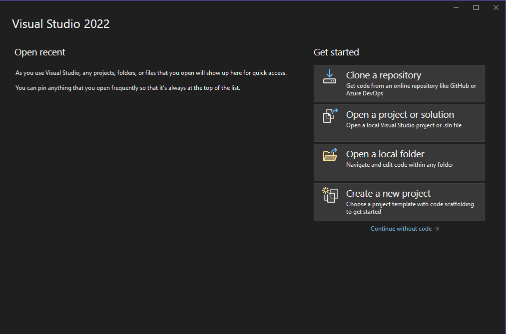
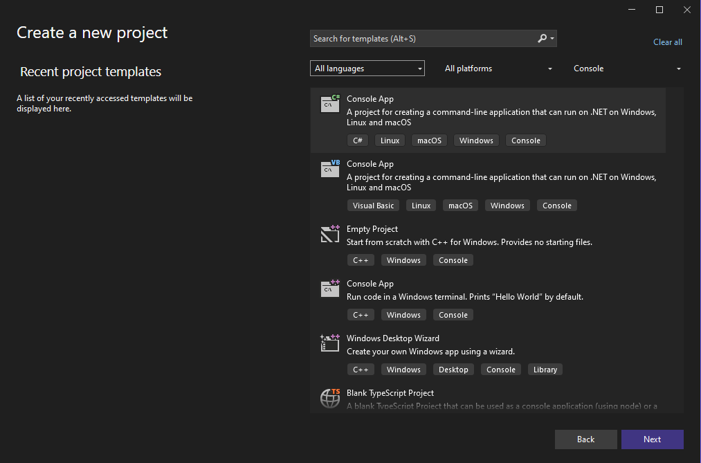
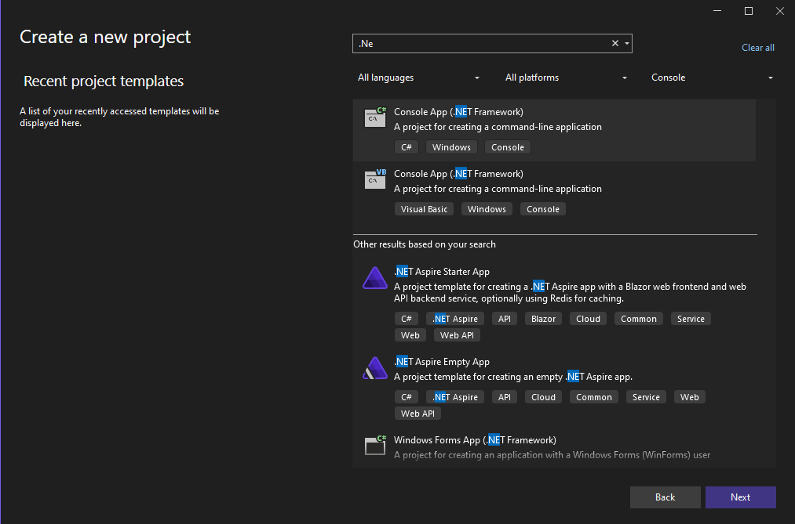
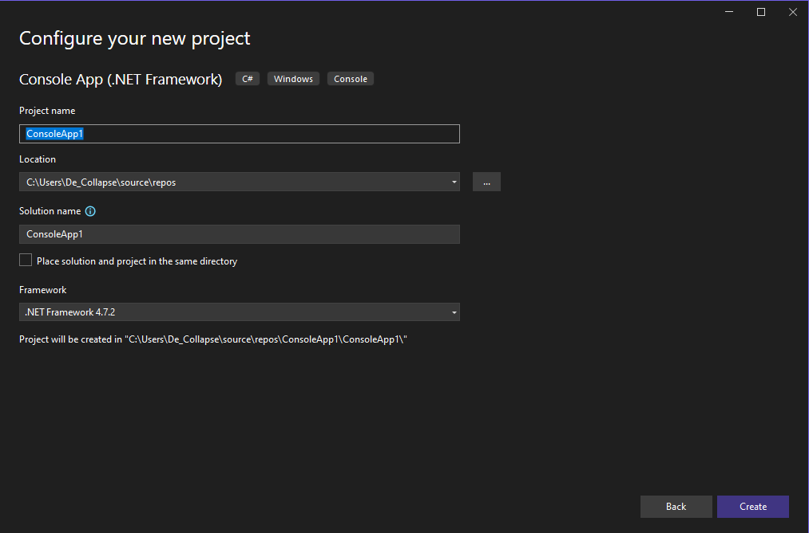

Курс по программированию на языке C#
Блок 0: Введение в программирование. Установка необходимого программного обеспечения.
Введение
Хотелось бы сразу дать исчерпывающее определение программированию, но, к сожалению, в этом не будет много смысла в контексте начального обучения. Поэтому скажу так:
Программирование — это процесс написания команд для компьютера, которые он будет исполнять.
Думаю, такое определение на данный момент вполне отчётливо передаёт главную суть — мы прописываем компьютеру, что и как отображать на экране или что и как вычислять. Однако есть важный нюанс: компьютер не понимает человеческой речи, и, соответственно, на человеческом языке писать команды мы не сможем. А сможем — на языке программирования.
Существует много языков программирования: C, C++, C#, Python, JavaScript, Java и т.д. и т.п. и в зависимости от задачи выбирается какой-то из них. Тем не менее, этот курс посвящён программированию на языке C#.
Установка необходимого программного обеспечения
Для того, чтобы мы могли писать код на C# нам понадобится интегрированная среда разработки, то есть IDE (Integrated Development Environmen). IDE — это программное обеспечение, позволяющее удобно и комфортно писать и запускать код. В этой статье будет описано установка именно Visual Studio, однако стоит сказать, что существуют и альтернативные IDE.
Установка достаточно простая:
- Зайти на оффициальный сайт: visualstudio.microsoft.com/ru/vs/community/ и нажать кнопочку "Скачать";
- Запустить скачанный файл. Он установит на компьютер Visual Studio Installer;
- В Visual Studio Installer поставить галочки на модули "Разработка классический приложений .NET"
- Нажать кнопочку "Установить", после чего начнётся загрузка самой Visual Studio.
Всё! Далее, чтобы уже начать писать код на C#, нужно открыть Visual Studio. В зависимости от версии, может отличаться пользовательский интерфейс, но всегда должна быть возможность создать или открыть проект:
На скриншоте видно, что справа есть кнопки для создания нового проекта "Create a new project". Это именно то, что нам нужно — кликаем. Далее будет окно, где нужно выбрать тип проекта:
Среди всех этих типов нас уинтересует только консольное приложение (.NET Framework), поэтому пишем в поисковую строку ".Ne":
Обращаю внимание,
что нам нужен именно тот вариант, где в скобках написано ".NET Framework" и чуть ниже C# (Не Visual Basic)
Выбираем нужный вариант, жмём кнопку "Next". Дальше выходит окно со стандартными конфигурациями проекта: название проекта, расположение, название решения:
Пока не обращайте внимание на "название решения", оно будет иметь такое же название, которое вы укажите в поле имени проекта. Заполните только поля названия проекта и расположение как вам будет удобно. А я оставлю ConsoleApp1.
После этого уже откроется сам редактор с открытой вкладкой "Program.cs", в ктором будет что-то такое:
2
3
4
5
6
7
8
9
10
11
12
using System.Collections.Generic;
using System.Linq;
using System.Text;
using System.Threading.Tasks;
}
Сразу скажу, не стоит пугаться всех этих надпесей! Придёт время, вы всё это поймёте, а пока давайте удалим строки 2-5 и сделайм перенос строки после последней открывающей фигурной скобки:
2
3
4
5
6
7
8
9
}
Всё! Теперь я рекомендую просто не трогать написанный код. Грубо говоря, он нужен, чтобы всё, что вы напишите работало. А писать код мы будем между последней парой фигурных скобок. И начнём мы с вывода строки на консоль в следующем блоке.
Следующий блок:
Блок 1: Вывод текста на консоль. Управляющие последовательности.